A nice project is my turn table project. I want to build one by myself but I never got to doing it. The accuracy is very important
for such a project. Having a 3D printer helped me in getting enough motivation to design one. So I started searching on the internet
for images of all kind of turn tables. Reading some of the stories of people building one (succesfull or not). Then I started doing
some sketches in openscad and that suprisingly turned out quite quickly to some attractive results. Then came the decission on how to
drive the turn table. A steppen motor sounded very attractive since that would only need 1 homing position and the rest of the
postions could be derived from the home position.
But how to turn the table, driving it center bridge (the optically attractive) or driving it from the side like the H0 turn tables that
you can buy (more stable for the bridge). Some of the hobby projects also selected a center drive. Here is a render of the design in
openscad.
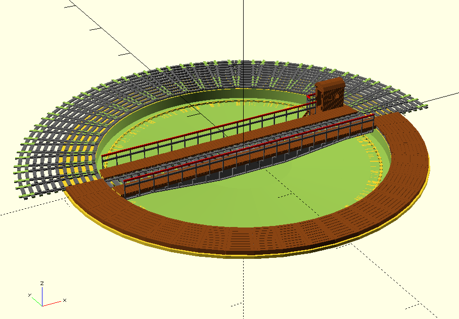
While I still needed to add
details to the drawing I started printing parts. I first started with the bridge. Then the gears followed and the pit.
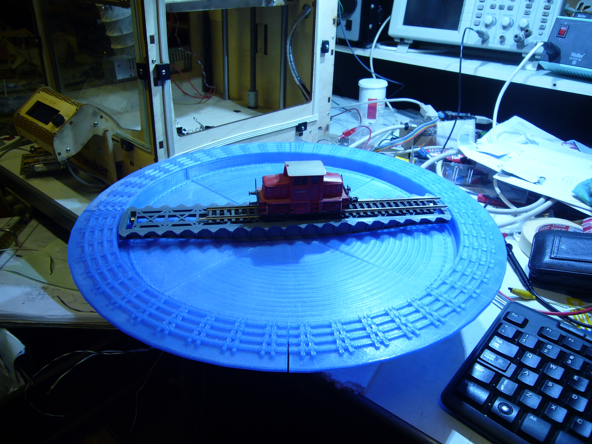
The pit and the track parts are printed seperatly but as you can see there is some room between the connection. It is not very
problematic, when laying the track you can remove some of the inaccuracies. Putty will remove some of it and I decided to not use
these connections in my track. A option could be to print the pit and the track parts as 1 part if it fits on the printer.
Here a image of the motor with the gears.
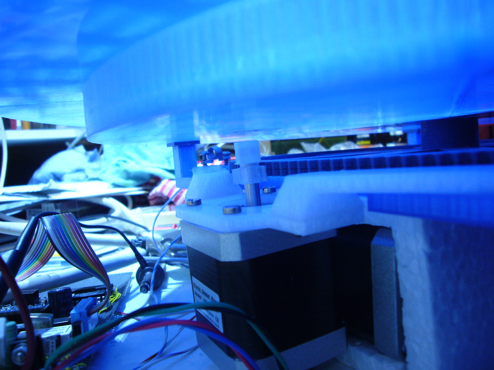
The small motor gear and the motor holder is printed with Colorfab XT to better stand the heat. On the other side
the motor does not get very warm since I reduced the current to about 1A max so I could have printed them in PLA. I had a small
printer problem while printing the big gear. The filament got itself into a knot so the printer started to lift the complete spool.
So I had some under extrusion problems. I got it fixed while printing and the gear is still usefull. Here is a test on how the platform turns.
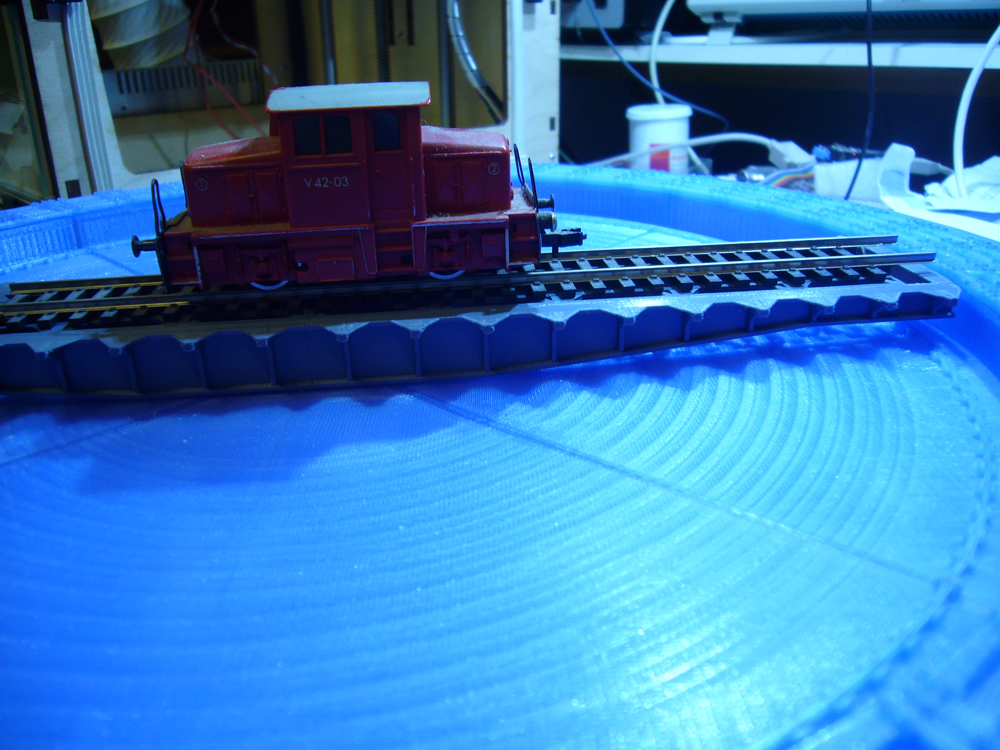
I decided to lift the bridge by 0.5mm to have a little bit more room between the bridge and the bottom. If I would print it again I would
print the pit a little bit deaper. Raising the bridge also means that I needed to compensate it with the track bed. So the track bed was
lowered 0.5mm. Below is a image of the gear construction.
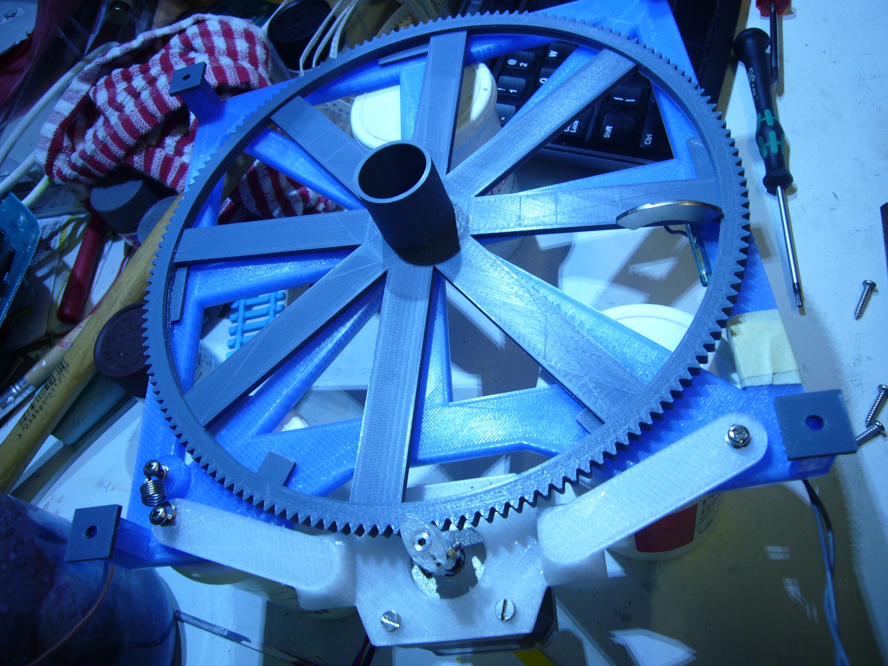
You can see the magnet that operates the reed relais that is used for the homing position. You can also see the 2mm plastic parts
that holds the gear absolutely level. The center bearing was causing still some motion in the wheel so that is why I decided to have these
extra plastic parts. The parts could be integrated in the baseplate. Also the spring that keeps the motor pressed against the gear. It also
helps to keep pressure on the bearing. Having the spring also helps to keep the toleranse differences of the gear away.
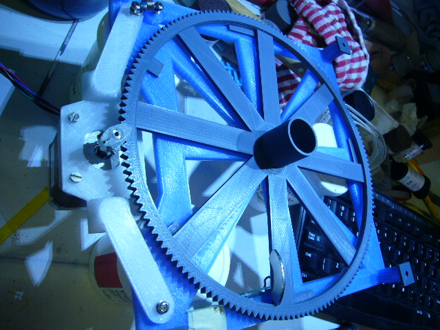
You can also see extra 2mm blocks I added to lower the bridge a little. There was not enough presure on the bridge to let it turn without
coming loose. So that is why I added the extra 2mm.
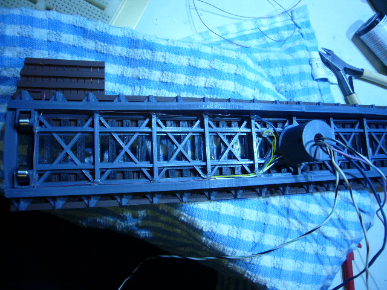
Before glueing the bridge together the wires need to be placed. When the bridge is glueed together there is no way you can get the wires
in. In the image you can clearly see all the wires that I put in place. 2 for the track 2 for the light and 3 for the sensor in the middle.
I decided not to make a pressure contact for all these wires. I will make sure that the software can never turn the bridge further then 360 degrees. I printed the bridge in grey and the track in black. But the top wood is just printed in some old gold and I airbrushed it to
brown.
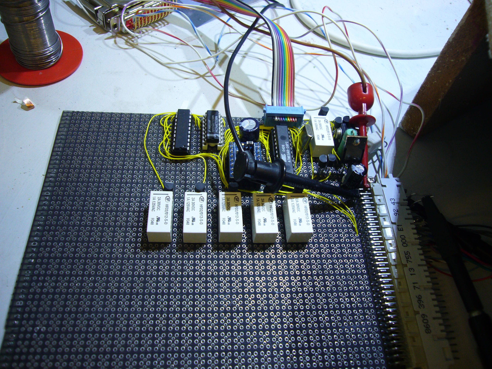
Here a image on the electronics. It contains the power transistors for the track and 1 relay for switching polarity. The atmega 8 as controller. A steppen controller that is used in 3D printers. And some logic circuits for output selection for the small tracks that only
start and end at the turntable. They will only be powered by the power of the bridge. Since I only have 5 tracks I only added 5 relais for that purpose. The controller could manage all 48 tracks if needed you just have to add the appropriate decoders and relays.
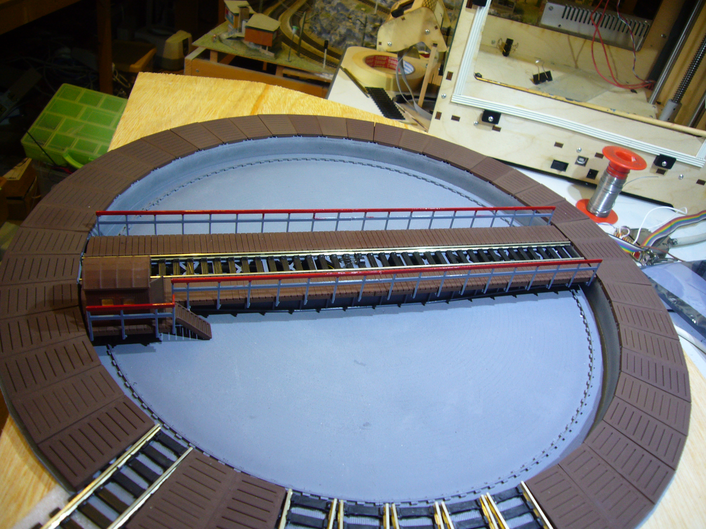
I put quite a bit of putty in the pit to remove as much as possible the printing scares. It did not completely remove them but the effect
is there. The pit is airbrushed grey. Also small covers are printed for the unused positions.
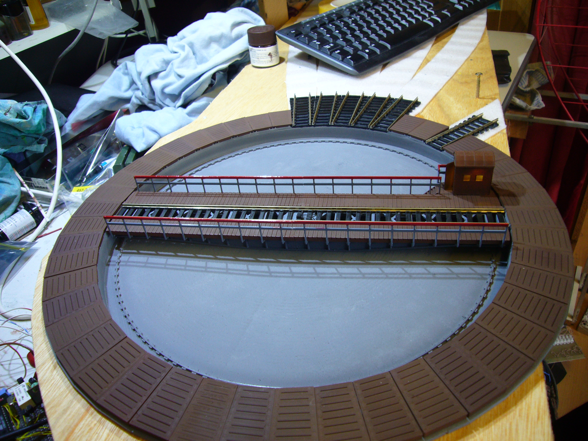
The rail connections are also printed before connecting it to the standard tracks.
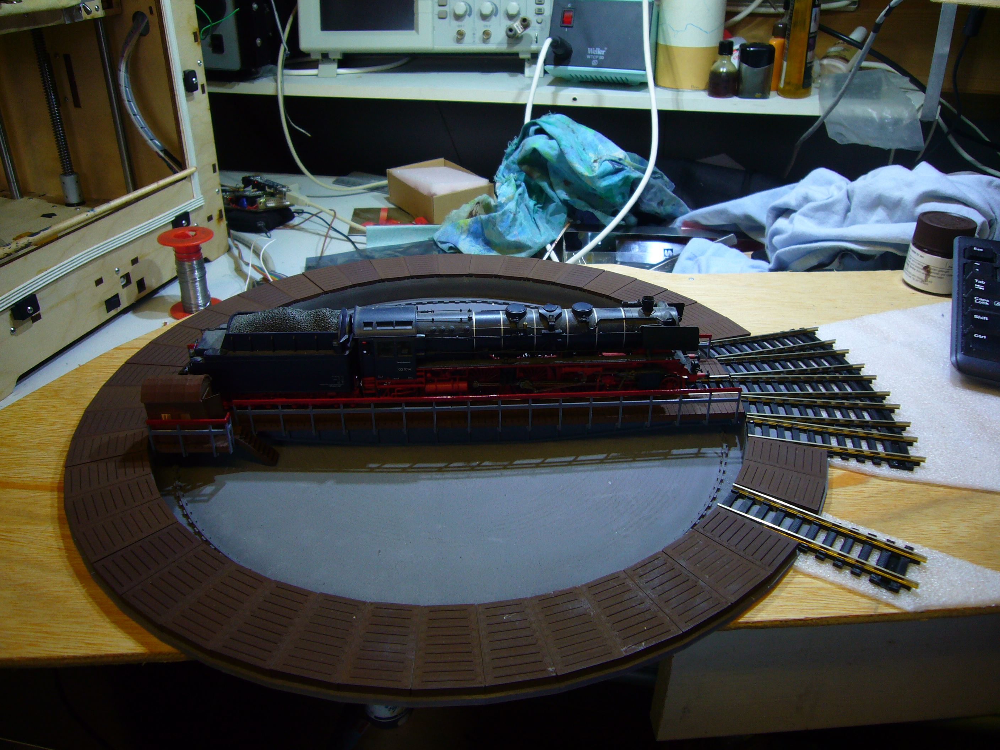
When turning the table the light in the house goes on for some time. One tip before screwing the bridge on the gear put a little bit of
filament trough the 3mm holes. This just alligns the wires inside without damaging them. I learned the hard way... The led burned dead when connecting it the first time. Without knowing the screw damaged the wires inside and created a short so that the led in the house burned out. I had to remove the house and replace the led and the wires inside the bridge which was not a fun task to do...
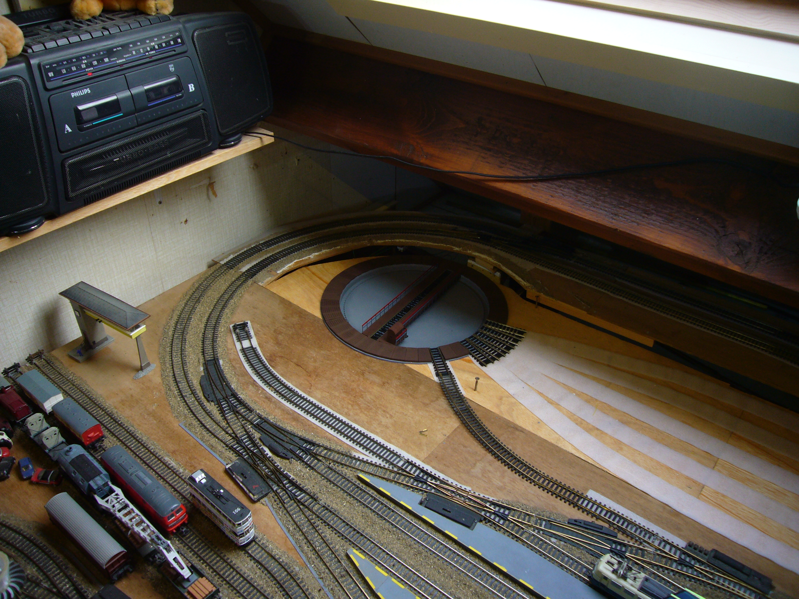
A image on the turntable integrated on my track.
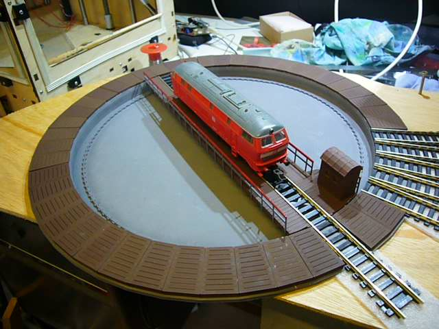
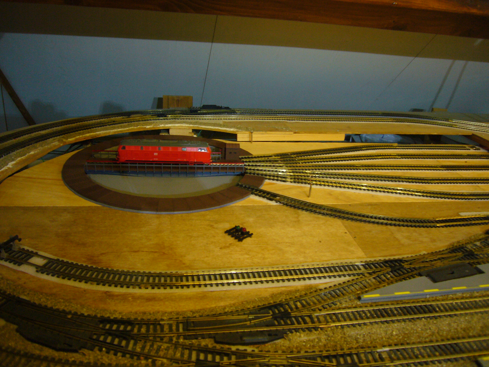
Here are 2 videos the first video was taken outside the track. The second video is when the turntable is completly integrated including the software.